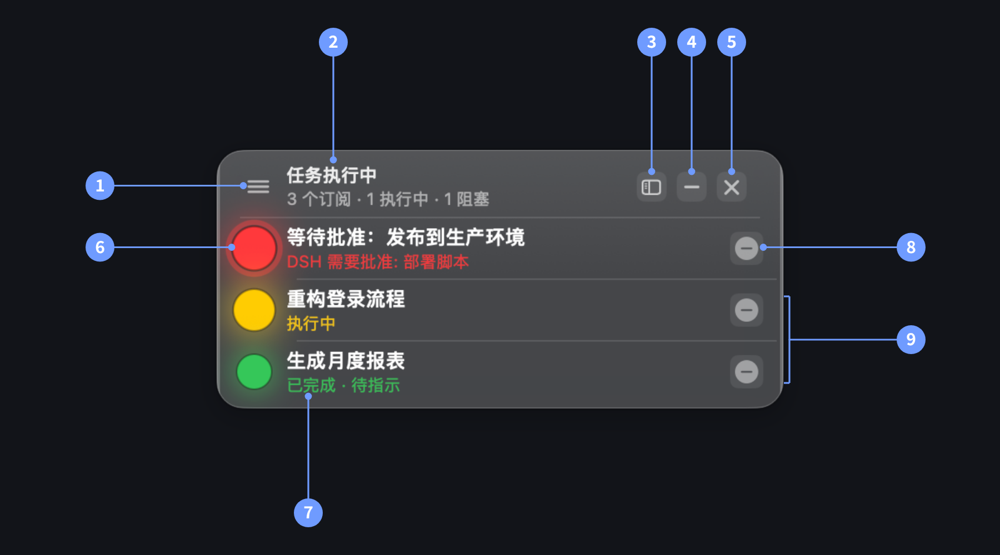

AI 画布编辑器
用 DSH 把产品需求直接生成为可视化“画布”原型，缩短方案沟通与验证周期。
项目介绍 ↗

面向跨境电商运营的 AI 自动化平台，把采集、清洗、图像处理、风险识别、上架串成可编排的生产链路。浏览器采集插件是这条链路的数据入口，不单独成案。
职责：定义采集字段、交互流程与数据回传/清洗标准，打通“采集 → 清洗 → AI 处理”数据链路。

SHOPLINE 主题编辑器：把页面组件原子级拆解与标准化，扩展 Flexbox 布局模型，支持多市场差异化装修，并搭建主题商城生态。
页面组件原子级拆解与标准化，构建基础组件库与可复用组件体系；基于 Flexbox 扩展布局模型。
构建“基础配置 + 单市场差异化配置”体系，支持同一主题在不同国家/地区独立装修。
0→1 搭建主题商城生态，建立第三方开发者入驻与审核发布流程，提升主题供给与商业价值。
把 AI 变成自己的日常工具：用 DSH 把需求生成可编辑画布原型；改造并开源 DSH 插件，沉淀 Agent 工作流与产品化实践。
用 DSH 把产品需求直接生成为可视化“画布”原型，缩短方案沟通与验证周期。
项目介绍 ↗
按会话的红 / 黄 / 绿状态灯、macOS 原生悬浮窗、可停靠侧栏与订阅会话导航；已上架 DSH 插件市场。
查看 GitHub ↗7 个原子能力串成一条生产链路：节点的输入输出契约、置信度阈值、失败降级由产品定义，执行层由工程实现。点节点看契约，切 tab 看能力库与评测。
| 能力 | 产出物 | 任务量 | 覆盖率 | 返回准确率 | 人工复核 | 单次成本 | 单产出成本 |
|---|
口径：以人工复核结果为 gold standard，按类目与图片质量分层抽 200 条；单产出成本 =（模型成本 + 人工成本 + 返工成本）÷ 正确产出数。
主题系统 · 案例拆解
页面组件原子级拆解与标准化，构建基础组件库与可复用组件体系；基于 Flexbox 扩展布局模型。
构建“基础配置 + 单市场差异化配置”体系，支持同一主题在不同国家/地区独立装修。
0→1 搭建主题商城生态，建立第三方开发者入驻与审核发布流程，提升主题供给与商业价值。
个人项目 · 案例拆解
用 DSH 把产品需求直接生成为可视化“画布”原型，缩短方案验证周期。案例开源：github.com/erinwangstudio-art/yayidesign。
按会话状态提示、macOS 悬浮窗与可停靠侧栏；已上架 DSH 插件市场。GitHub：github.com/erinwangstudio-art/dsh-trafficlight。